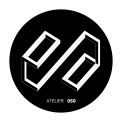

Atelier OSO
PROJETOS | WORK
SOBRE | ABOUT
CURRICULUM VITAE
CONTACTO | CONTACT
curriculum vitae
curriculum vitae
Filipe Raposo Cardoso
Arquiteto OASRS n.º19614
início | back
contacto | contact
Built with
Website Building Software